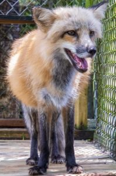
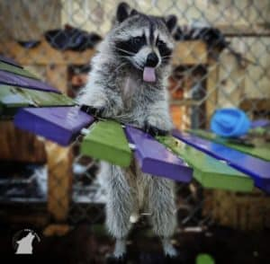

Anja

Anja is a red fox that Shy Wolf recieved after her previous owners decided to move to a state that
doesn't allow foxes as pets. This broke Anja's trust and she hasn't opened up the volunteer's at Shy
Wolf. While she hasn't warmed up to her new home, people, and other animals around her, the volunteers
at Shy Wolf still do everything they can to take care of her and enrich her life.
To learn more about Anja, click here.
Mikey

Mikey was discovered at Shy Wolf at such a young age, that he still had his umbilical cord attached. They
guessed he was only two or three days old and took him in, as he likey wouldn't have made it on his own
at that young of an age. He lives at the sanctuary, sharing his uniqueness with the residents, visitors,
and volunteer staff. When he isn't playing with the other racoons or on the "busy board", he likes to
hang out in the hammocks on of the volunteers made for the racoons.
To learn more about Mikey, click here.
Honey
Honey is a Fennec Fox that came to Shy Wolf from her original owner, who's life became too complicated to
properly take care of her. She is incredibly shy, but she is getting lots of love to break her out of
her shell. She's a very bashful cahracter but has lots of love to give.
To learn more about Honey, click here.